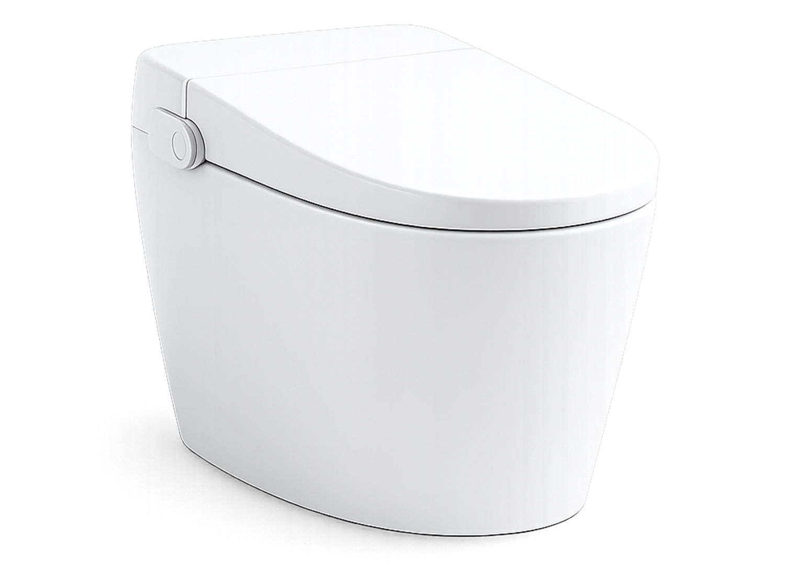
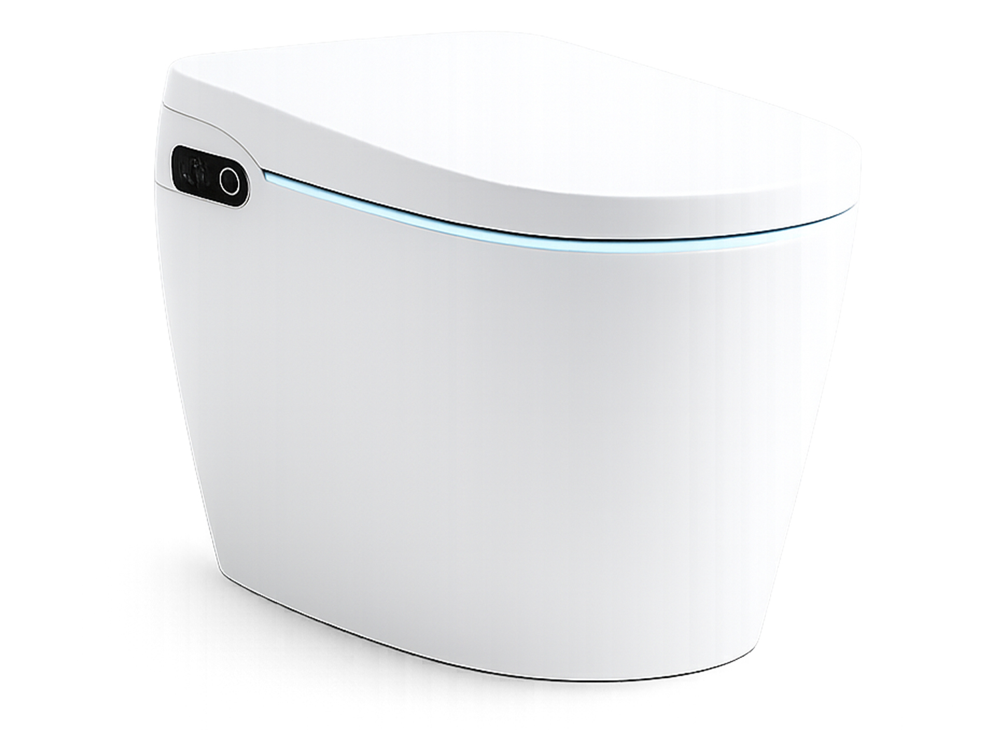
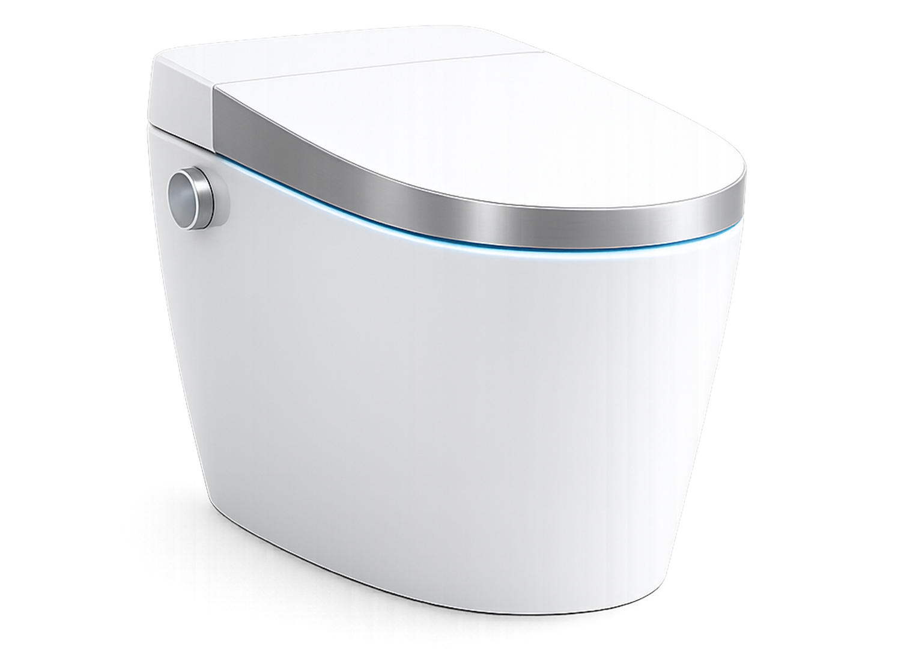
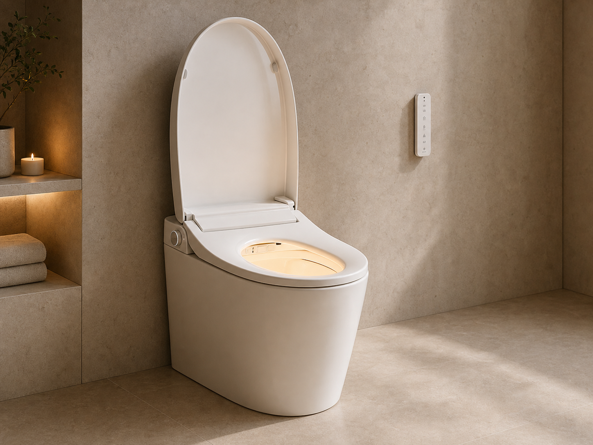
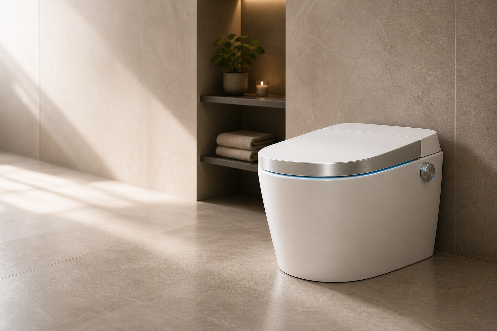
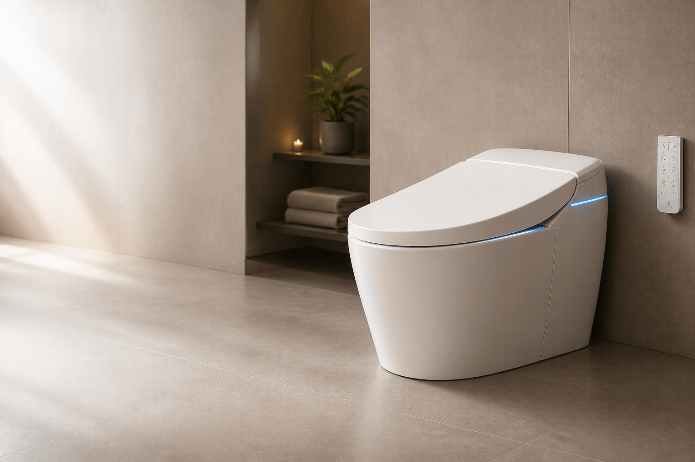

Hygienische Reinigung
Wasser entfernt Rückstände gründlich und erreicht Bereiche, die Papier oft nicht vollständig reinigt.
Mehr Frische. Mehr Komfort. Mehr Wohlbefinden.
Erlebe tägliche Reinigung mit Wasser –
sanft, hygienisch und luxuriös.
Wasser entfernt Rückstände gründlich und erreicht Bereiche, die Papier oft nicht vollständig reinigt.
Kein Reiben. Keine Irritationen. Besonders angenehm für empfindliche Haut.
Reduziere den Verbrauch von Toilettenpapier und Feuchttüchern deutlich.
Warmsitz, individuell einstellbare Wassertemperatur, Föhnfunktion und intuitive Bedienung.
Automatische Düsenreinigung vor und nach jeder Nutzung sorgt für zusätzliche Hygiene.
Finde das perfekte Modell für dein Badezimmer.
Der Einstieg in komfortable Hygiene.

Mehr Komfort. Mehr Möglichkeiten.

Das Premium-Erlebnis ohne Kompromisse.



Mehr Hygiene und Komfort für jeden Tag.
Unterstützt eine selbstständige Körperpflege und erleichtert den Alltag.
Die sanfte Reinigung mit Wasser kann Hautreizungen durch häufiges Wischen reduzieren.

◇Technologie und Ästhetik perfekt kombiniert.
Ja. Die Reinigung erfolgt mit frischem Leitungswasser. Die Düse reinigt sich vor und nach jeder Nutzung automatisch und fährt geschützt in das Gehäuse zurück.
Deutlich weniger. Für das Trocknen steht je nach Modell eine regulierbare Warmluftfunktion zur Verfügung.
AVINOVA kann im Neubau und in vielen bestehenden Badezimmern installiert werden. Erforderlich sind ein Wasser- und ein Stromanschluss.
Die glatte Keramik und der abnehmbare Sitz vereinfachen die Pflege. Ein mildes, nicht scheuerndes Reinigungsmittel genügt.
Unsere Produktexperten beraten Sie unverbindlich zu Funktionen, Einbau und Ihrem passenden AVINOVA Modell.